Our next algorithm for computing the shortest distances of a graph is based on an algorithm design technique called dynamic programming. This is where smaller, less difficult subproblems are first solved before the full problem is solved.
Floyd's algorithm computes a distance matrix from a cost matrix in time .
Thus the running time is comparable to Dijkstra's algorithm since we would have
to run Dijkstra's algorithm 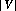 times to calculate all entries of
the distance matrix. However, as can be seen, the following algorithm is much
easier to code.
algorithm Floyd(cost matrix )
Let equal the dimension of
1 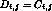
3 for each 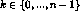 do
4 for each 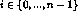 do
5 for each 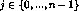 do
6 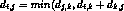 )
7 return shortest distance matrix 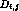
end
The idea behind the algorithm is to compute the shortest paths for all pairs
of vertices and using vertices (as internal
vertices) for k increasing from 0 to At line 6 in the algorithm we
decide whether using vertex k can improve the currently known shortest path
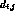 between vertices and .
Example 30. An application of Floyd's algorithm on the third graph of
Example 26 is given below.
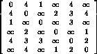 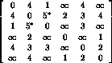 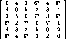
Initial cost matrix
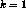
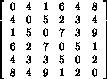 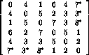 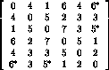
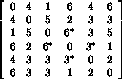
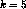
In the above matrices we list the entries that change after each increment of k. Notice that undirected graphs, as expected, have symmetric distance matrices.